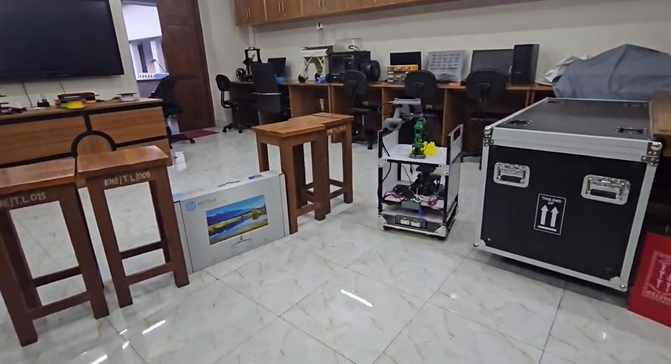
Autonomous Navigation
IHABOTv2 is equipped with advanced autonomous navigation capabilities, allowing it to traverse hospital floors safely and efficiently, delivering medications and supplies without human intervention.
IHABOTv2 is Bangladesh’s first intelligent hospital assistant robot, featuring autonomous navigation, rehabilitation monitoring, medicine delivery via a robotic arm, EWS with LLM-based clinical interpretation, and interactive application for real-time monitoring by both medical professionals and patients.
Designed for affordability and seamless integration, it helps reduce nurse workload while enhancing safety and care efficiency.

IHABOTv2 is equipped with advanced autonomous navigation capabilities, allowing it to traverse hospital floors safely and efficiently, delivering medications and supplies without human intervention.
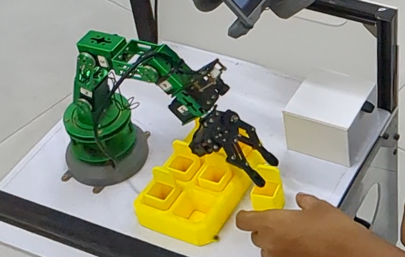
The integrated robotic arm enables precise medicine delivery to patients, reducing nurse workload and improving delivery accuracy.

IHABOTv2 assists in rehabilitation monitoring, ensuring patients receive consistent and effective care through interactive exercises and real-time feedback.
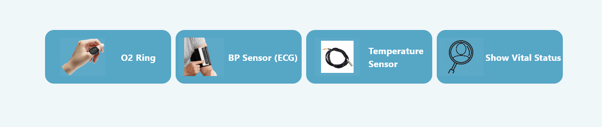
An interactive application, synchronized through Google Firebase, provides real-time monitoring for medical professionals and patients, offering immediate insights into robot operations and patient status.
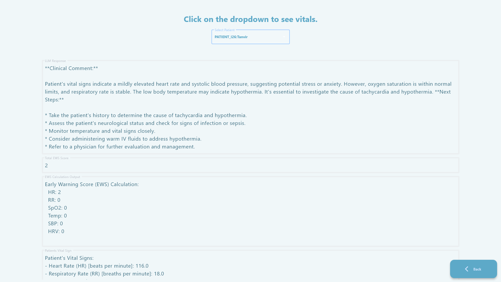
The Early Warning System integrates with an LLM for intelligent clinical interpretation of patient vital signs, providing proactive alerts and insights to medical staff.
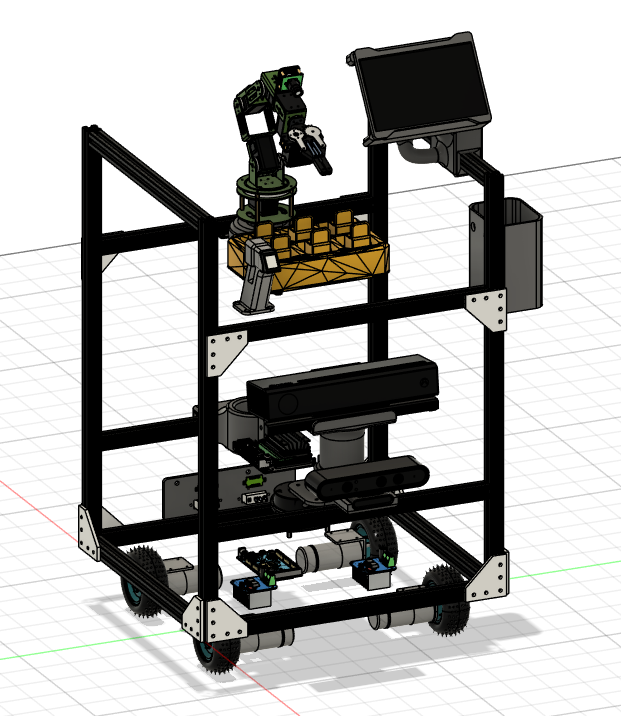
The robot's chassis is constructed using aluminum profiles, ensuring a robust yet lightweight structure. This design choice facilitates easy expansion and modification, allowing for future upgrades and integration of new functionalities.
Contributed to developing IHABOTv2, a hospital robot capable of roaming hospital floors, delivering medicine to multiple patients automatically, recording vital signs, and assisting in exercise evaluation without the need for a nurse.
Led the hardware design, integrating navigation, robotic arm, BLE sensors, and the user interface, with all systems synchronized through Google Firebase for real-time monitoring and control.
Collaborated with a cross-functional team to seamlessly connect hardware and software, ensuring safety and efficiency of the robot.
Helped scale the system to deliver medicine to eight patients per cycle (currently in testing), reducing nurse workload and improving delivery accuracy.
IHABOTv2 Link to Details
Led the development of Intelligent Hospital Assistant Robot Version 2
Each critical subsystem was carefully designed and integrated to ensure optimal performance and seamless operation of IHABOTv2.
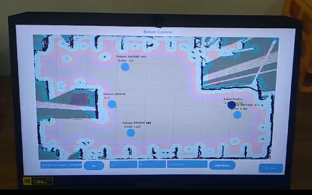
The navigation system utilizes advanced sensors and algorithms to enable IHABOTv2 to autonomously navigate complex hospital environments, avoiding obstacles and reaching designated locations.
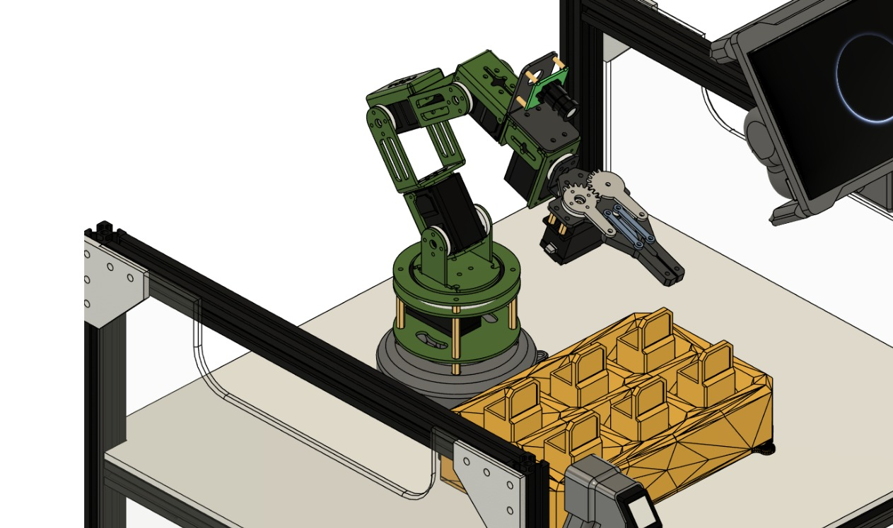
A precision robotic arm facilitates accurate medicine delivery and assists with rehabilitation tasks. The system is designed for safe and gentle interaction with patients.
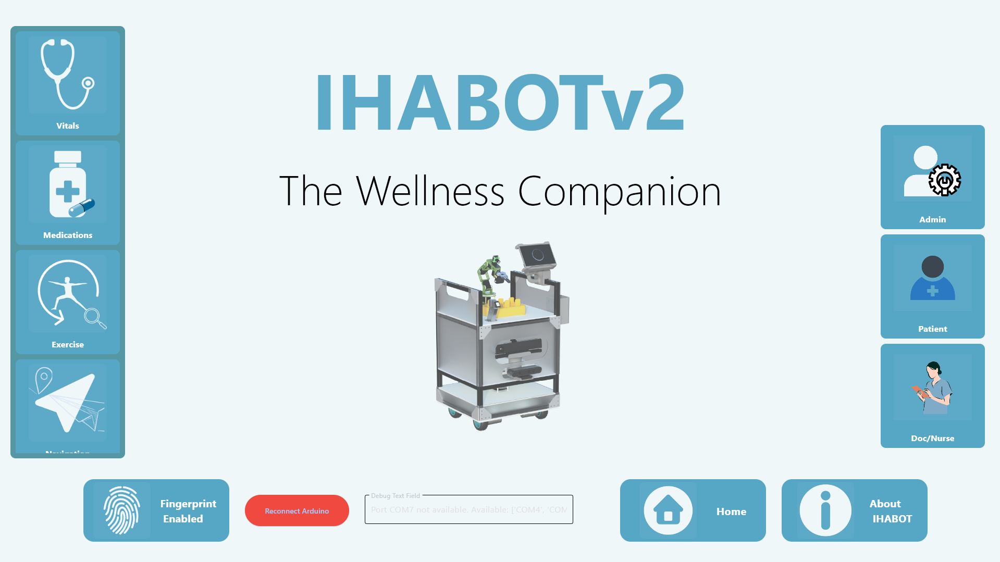
The Early Warning System integrates with an LLM for intelligent clinical interpretation of patient vital signs, providing proactive alerts and insights to medical staff.
The navigation system is powered by a ROS (Robot Operating System) workstation, dividing intensive computational tasks between an onboard NVIDIA Jetson for real-time sensor processing and a dedicated workstation PC for complex path planning and mapping, ensuring robust and efficient autonomous movement.
A separate embedded computer is dedicated to managing all user interface tasks, displaying real-time data, and overseeing various other robot functionalities. This separation ensures optimal performance and responsiveness for both navigation and human-robot interaction.
Visual highlights from the development and testing of IHABOTv2.
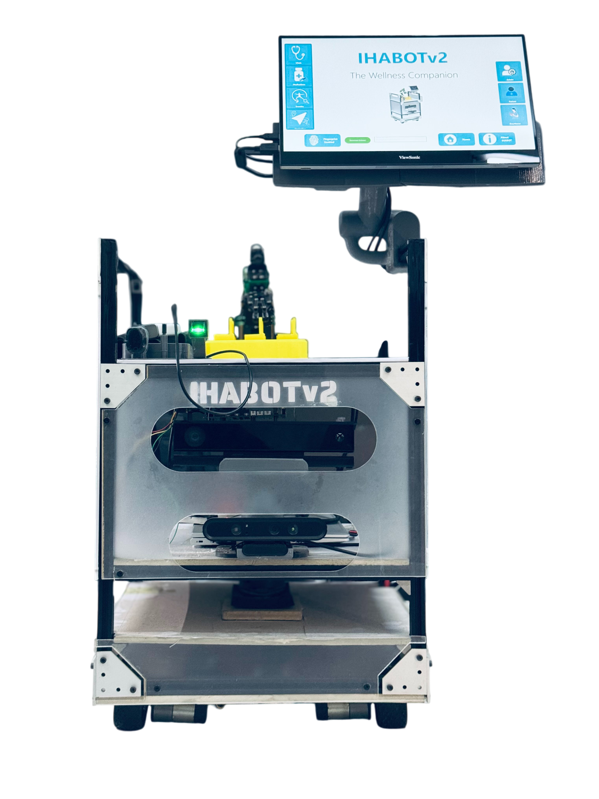
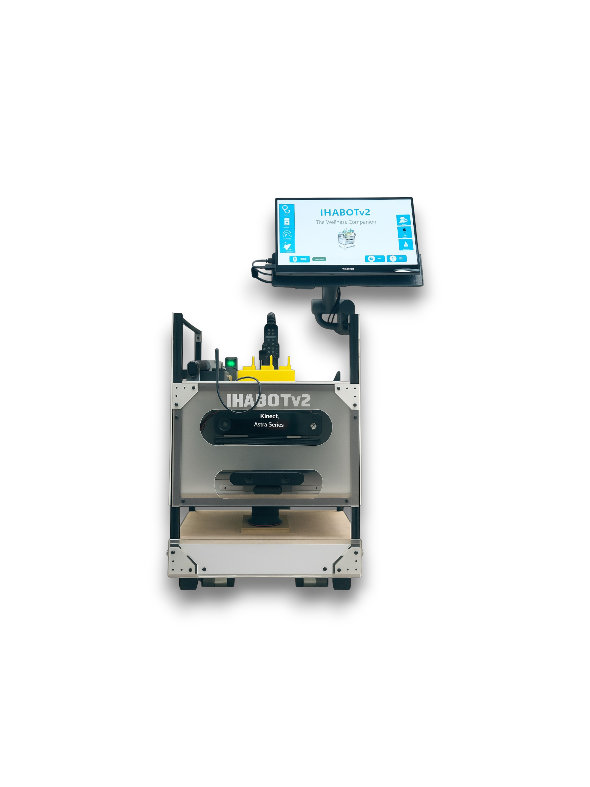
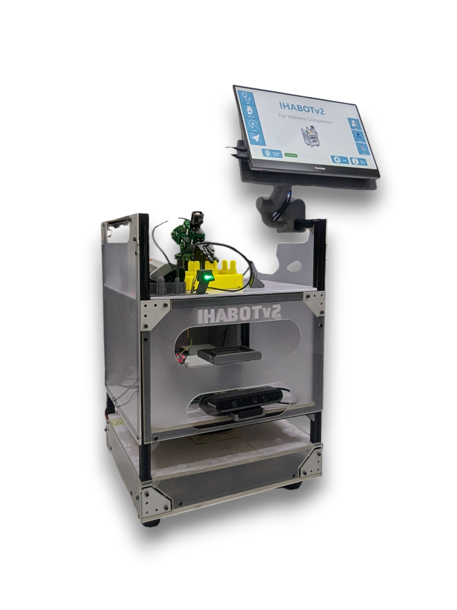
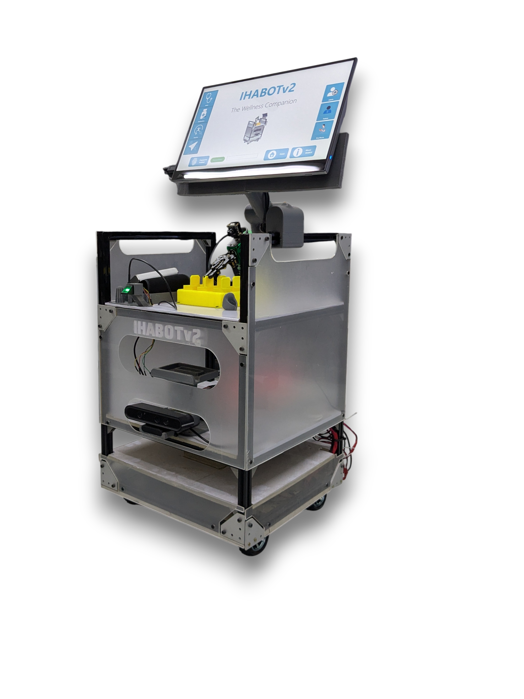
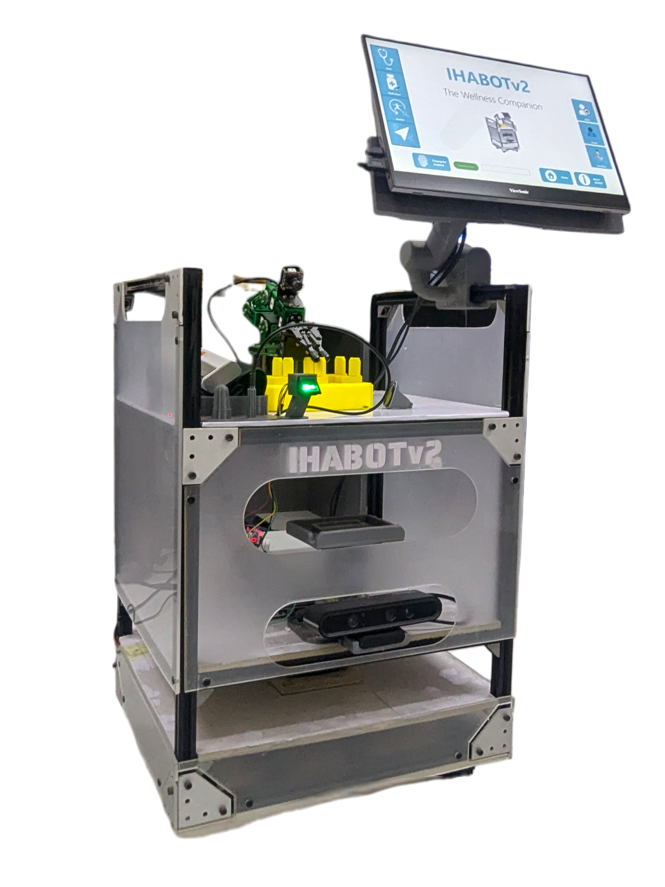
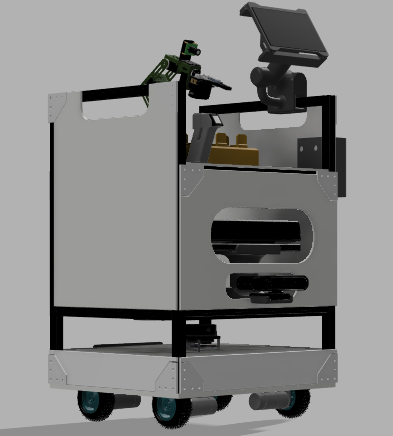
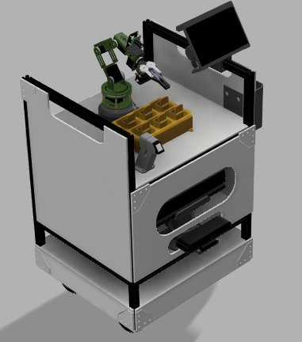
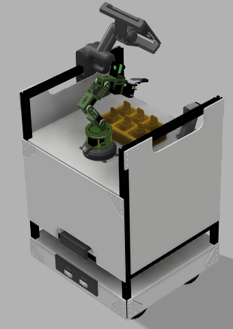
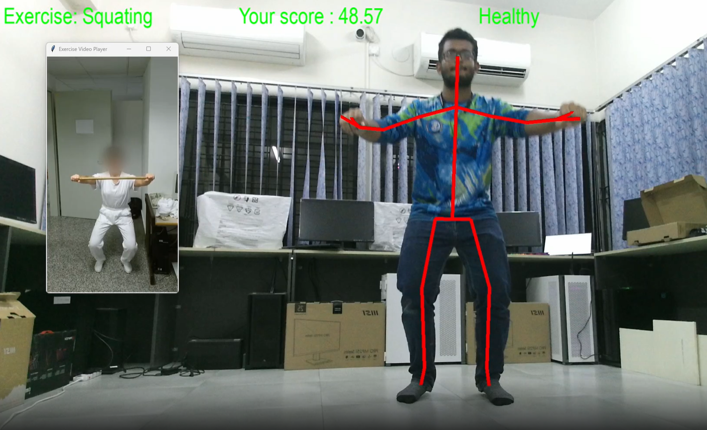
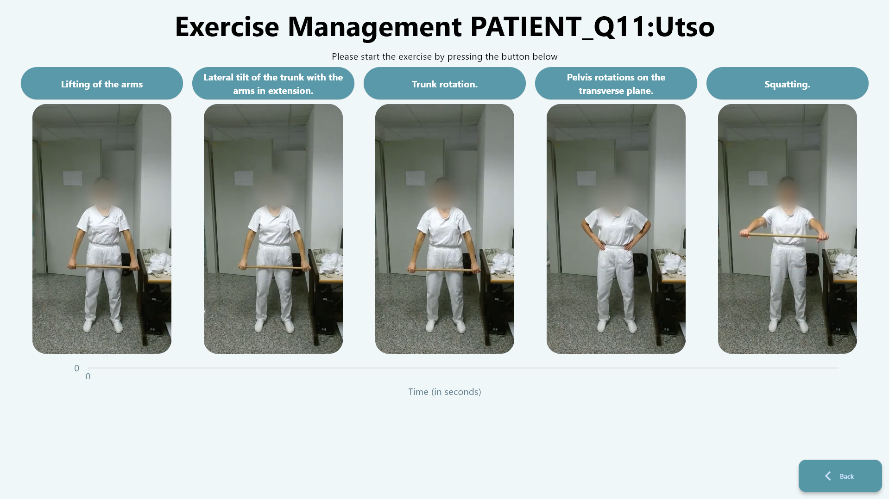